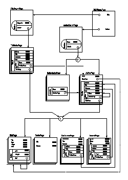

Click here to enlarge the ADM scheme. |
The Database and Logic Programming Bibliography Server in ARANEUS
Description
The DB & LP Server (
http://www.informatik.uni-trier.de/~ley/db/) is a large collection
of computer science citations from conferences and journals related to
Database Systems and Logic Programming.
Here we consider a fragment of the server, namely the branches
that allow the user to search the bibliography database using for citations
of interest.
Starting from the home
page, the site can be searched in two ways:
For each author, a page in the site reports all of his/her woks (see, for
example, the AuthorPage
corresponding to papers by Codd); for each paper, several attributes
(the title, authors, year ecc.) are reported, plus a link to the conference
(ConferencePage),
journal (JournalPage)
or series in which the paper appeared (some of these pages may belong to
other sites ; in this case they are modeled by page scheme WebPage).
|